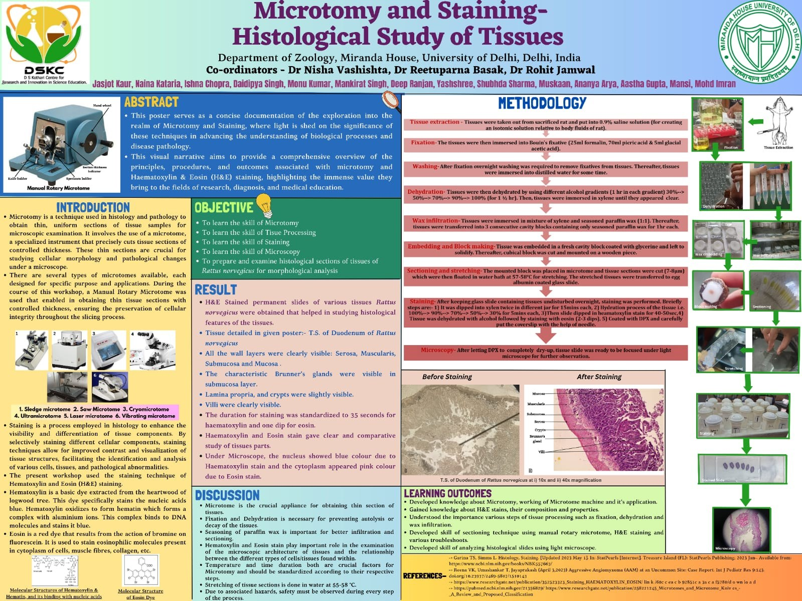

The poster

Presented at the DS Kothari Centre for Research and Innovation in Science Education, Miranda House, University of Delhi, 2023. Reproduced here with the names of everyone who worked on it.
The protocol, step by step
Written out as a procedure, with the numbers that were actually used. Each step exists to stop a specific thing going wrong, which is the second column.
| Step | What was done | Why |
|---|---|---|
| Tissue extraction | Tissue placed in 0.9% saline | Isotonic with body fluid, so cells neither swell nor shrink |
| Fixation | Bouin's fixative (25 ml formalin, 70 ml picric acid, 5 ml glacial acetic acid) | Cross-links protein and stops autolysis, which would otherwise destroy the architecture being studied |
| Washing | Overnight running wash, then distilled water | Removes fixative; leftover picric acid interferes with staining |
| Dehydration | Ascending alcohol, 1 h each: 30% → 50% → 70% → 90% → 100% (1½ h), then xylene until clear | Wax will not enter wet tissue; the gradient avoids the shrinkage a sudden change causes |
| Wax infiltration | Xylene–paraffin 1:1, then three changes of seasoned paraffin, 1 h each | Replaces the clearing agent with wax throughout, so the block cuts evenly |
| Embedding | Fresh cavity block, glycerine-coated, left to solidify; trimmed and mounted on wood | Gives a block that can be clamped and oriented |
| Sectioning | Manual rotary microtome, 7–8 µm; ribbons floated at 57–58 °C and picked up on albumin-coated slides | Thin enough for light to pass through a single cell layer; the warm bath flattens the compression from cutting |
| Staining | Xylene ×2 (15 min each) → descending alcohol 100 → 90 → 70 → 50 → 30% (5 min each) → haematoxylin 35 s → alcohol → eosin 2–3 dips → DPX and coverslip | Dewax, rehydrate, stain nuclei blue and cytoplasm pink, then dehydrate and seal. The times are the part that was standardised. |
| Microscopy | DPX dried fully, then examined at 10× and 40× | A wet mount drifts and the coverslip moves under the objective |
What we saw
- Permanent H&E slides of rat tissue; the poster shows a transverse section of duodenum.
- All four wall layers were resolved: serosa, muscularis, submucosa and mucosa, with villi and crypts, and Brunner's glands in the submucosa.
- Nuclei blue from the haematoxylin, cytoplasm pink from the eosin — the contrast the whole method exists to produce.
- Staining was standardised at 35 seconds of haematoxylin and one dip of eosin, after comparing shorter and longer times by eye.
Why this led to phase 2
The one decision we made by eye was how long to stain. That is fine when a person is going to look at the slide, because the eye adapts to the overall colour. It is not obviously fine when software is going to measure the slide instead, and that is a question the workshop could not answer with the slides in front of us: we had no way of knowing the true number of nuclei in a field, so we could not tell whether a measurement had changed because the tissue differed or because the staining did.
Phase 2 answers it by building fields whose nuclei are known exactly, staining them computationally at strengths from 0.4× to 2.0×, and measuring what happens. The result is here: the staining matters enormously to a fixed cut-off and hardly at all to a method that re-derives its threshold per image — so the protocol was right to pin the times down, and software reading such slides should not assume they were.
Authors
Co-ordinators: Dr Nisha Vashishta, Dr Reetuparna Basak, Dr Rohit Jamwal.
Student authors: Jasjot Kaur, Naina Kataria, Ishna Chopra, Daidipya Singh, Monu Kumar, Mankirat Singh, Deep Ranjan, Yashshree, Shubhda Sharma, Muskaan, Ananya Arya, Aastha Gupta, Mansi, Mohd Imran.
Department of Zoology, Miranda House, University of Delhi, with the DS Kothari Centre for Research and Innovation in Science Education. The phase 2 analysis on this site is my own work and uses public images only; it does not reuse any data from the workshop.